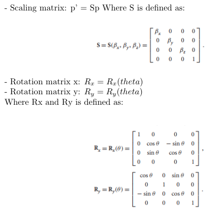
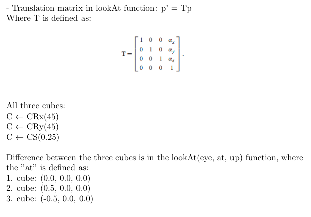

List the transformation matrices that you used in Parts 1 and 2 (use general expressions rather than concrete numbers).

For each cube, write down a formula showing how the matrices were concatenated to become the current transformation matrix (CTM) that was used to transform the vertices in the vertex shader.
